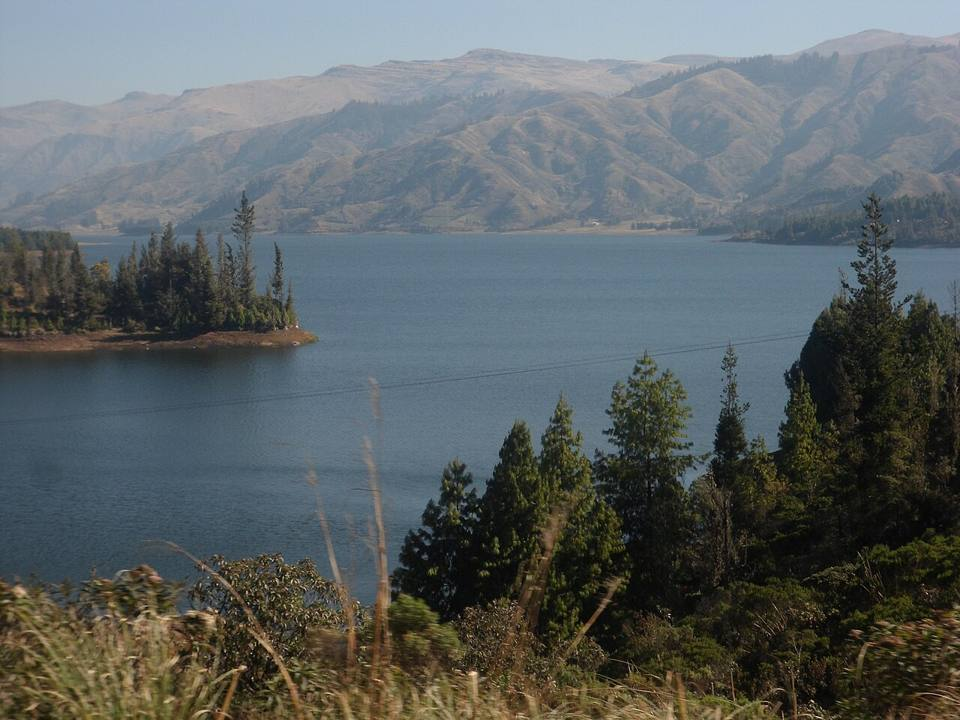
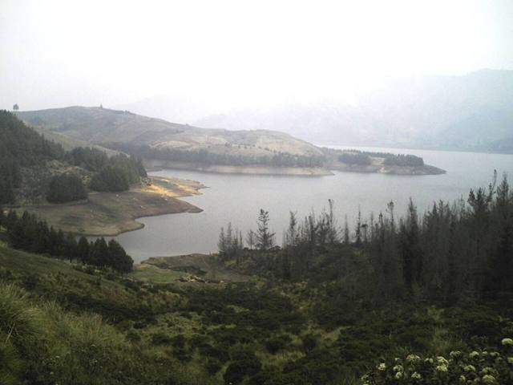
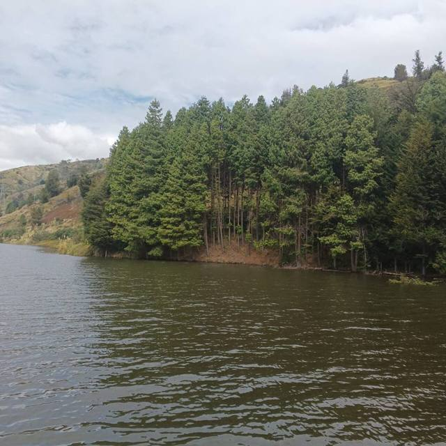
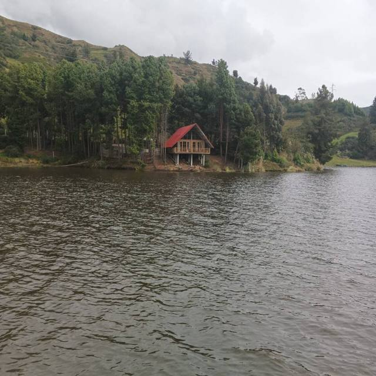

Laguna Corani
Departamento de Cochabamba · Naturaleza y caminatas

En la carretera al Chapare, pasando Colomi, la represa de Corani formó en los años 60 un gran lago de altura que genera parte de la electricidad del país. Rodeado de bosques de pinos y cerros muchas veces en la neblina, es uno de los paseos favoritos de los cochabambinos el fin de semana: vuelta en bote, senderos cortos y trucha a la parrilla en los restaurantes a orillas del agua.
3200 maltura
0 a 1 díapara quedarse
Qué hacer
- Paseo en bote o lancha por la laguna
- Trucha frita o a la parrilla a orillas del lago
- Caminata o bicicleta por los bosques de pinos
Qué comer
- TruchaTrucha del lago Titicaca o de los ríos de la Cordillera, frita o a la parrilla, con arroz, papas fritas y ensalada. Se come en la playa de Copacabana y en los restaurantitos de los pueblos de montaña.
- ChicharrónCerdo cocido en su propia grasa hasta dorarse, con mote y chuño. El plato del domingo.
Consejo. Unas 2 h desde Cochabamba por la carretera a Santa Cruz por el Chapare (bus a Colomi, o auto). Hace frío y es húmedo: lleva chamarra. Se combina bien con Incachaca, un poco más abajo.
Cómo llegar a Corani
Incachaca Carretera (bus, auto) · unos 30 min
Auto o excursión, por el camino que baja de la represa.
Cochabamba Carretera (bus, auto) · unas 2 h
Bus o minibús a Colomi, y luego taxi hasta la laguna, o auto.
Fotos de Laguna Corani

_Chapare_Bolivia.jpg){kind=link}




Otros lugares de la región
 CochabambaLa «ciudad de la eterna primavera» y capital gastronómica del país.
CochabambaLa «ciudad de la eterna primavera» y capital gastronómica del país. Laguna AlalayUna gran laguna en el corazón de Cochabamba, refugio de aves al pie de los cerros.
Laguna AlalayUna gran laguna en el corazón de Cochabamba, refugio de aves al pie de los cerros. Pairumani y Villa AlbinaLa villa del barón del estaño Simón Patiño, sus jardines, y el inicio de un sendero al Tunari.
Pairumani y Villa AlbinaLa villa del barón del estaño Simón Patiño, sus jardines, y el inicio de un sendero al Tunari. Parque Nacional TunariLas montañas justo encima de la ciudad: lagunas de altura y la cumbre del Tunari (5035 m).
Parque Nacional TunariLas montañas justo encima de la ciudad: lagunas de altura y la cumbre del Tunari (5035 m).- Apote y sus cascadas gemelasUn valle de montaña encima de Tiquipaya, con dos cascadas lado a lado y senderos hacia el Tunari.
 YungapampaUn refugio sobre un mar de nubes, en la cara norte del Tunari, tierra del oso andino.
YungapampaUn refugio sobre un mar de nubes, en la cara norte del Tunari, tierra del oso andino. IncachacaUn bosque de nubes al borde del Chapare, con un puente inca, cascadas y una vieja planta eléctrica.
IncachacaUn bosque de nubes al borde del Chapare, con un puente inca, cascadas y una vieja planta eléctrica. Valle Alto: Tarata y ClizaPueblos coloniales del valle, mercados y chicha.
Valle Alto: Tarata y ClizaPueblos coloniales del valle, mercados y chicha. Quillacollo e Inca RakayRuinas incas encima de Sipe Sipe, y Quillacollo, ciudad de la Urkupiña.
Quillacollo e Inca RakayRuinas incas encima de Sipe Sipe, y Quillacollo, ciudad de la Urkupiña. Parque Nacional TorotoroHuellas de dinosaurio, un cañón espectacular y la caverna de Umajalanta.
Parque Nacional TorotoroHuellas de dinosaurio, un cañón espectacular y la caverna de Umajalanta. IncallajtaEl sitio inca más grande de Bolivia, en un valle aislado.
IncallajtaEl sitio inca más grande de Bolivia, en un valle aislado. TotoraPueblito colonial muy bien conservado en la carretera antigua a Santa Cruz.
TotoraPueblito colonial muy bien conservado en la carretera antigua a Santa Cruz. AiquileLa capital nacional del charango, a medio camino entre Cochabamba y Sucre.
AiquileLa capital nacional del charango, a medio camino entre Cochabamba y Sucre. MizquePueblo colonial de un valle cálido, tierra de la paraba frente roja.
MizquePueblo colonial de un valle cálido, tierra de la paraba frente roja.